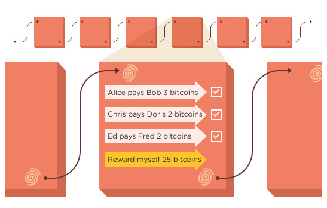

¿Qué es el "Blockchain"?
10 Agosto de 2020
Durante las últimas semanas has podido leer, eschuchar y encontrar esta palabra por todad partes, pero, ¿Sables realmente lo que es?
Pongámonos en situación. Lo normal es que si una persona llamada por ejemplo Mariano quisiera enviarle 1.000 euros a otra persona llamada por ejemplo Luis, lo normal es que la operación se realizase a través de un banco. Ese banco actúa como intermediario de esa y otras muchas transacciones, centralizando de forma efectiva el movimiento de capital de un lado a otro.
Mariano le pediría a su banco que retirara 1.000 euros de su cuenta y los transfiriese a la cuenta de Luis: en apenas unas horas (dependiendo del banco, claro) ese banco habrá anotado en su cuenta la transacción, restando 1.000 euros en su cuenta y comunicando al otro banco que debe añadir 1.000 euros en la cuenta de Luis. Alguien en el banco de Luis (a estas alturas, ya sabemos que ese alguien es un programa informático) anotará que en la cuenta de Luis hay 1.000 euros más procedentes de la cuenta bancaria de Mariano.
Esa gestión no ha necesitado de un trasiego de billetes de un lado a otro, sino que simplemente ha habido uno o dos bancos que se han encargado de hacer que el dinero pase de uno a otro con un simple cambio en los balances de sus cuentas. Todo estupendo y fantástico, salvo por un problema:
Que ni Mariano ni Luis tienen control alguno sobre el proceso, del que solo esos bancos tienen toda la información. Ambos dependen de esos bancos y de su forma de hacer las cosas para completar esa transacción. Están sujetos a sus condiciones (y a sus comisiones, por supuesto).
Hola, cadena de bloques
Es ahí donde entra la cadena de bloques, que básicamente elimina a los intermediarios, descentralizando toda la gestión. El control del proceso es de los usuarios, no de los bancos —seguimos hablando del dinero, pero el ejemplo es extrapolable a otros tipos de transacción—, y son ellos los que se convierten básicamente parte de un enorme banco con miles, millones de nodos, cada uno de los cuales se convierte en partícipe y gestor de los libros de cuenta del banco.

¿Qué es entonces la cadena de bloques? Pues un gigantesco libro de cuentas en los que los registros (los bloques) están enlazados y cifrados para proteger la seguridad y privacidad de las transacciones. Es, en otras palabras, una base de datos distribuida y segura (gracias al cifrado) que se puede aplicar a todo tipo de transacciones que no tienen por qué ser necesariamente económicas.
Esa cadena de bloques tiene un requisito importante: debe haber varios usuarios (nodos) que se encarguen de verificar esas transacciones para validarlas y que así el bloque correspondiente a esa transacción (en cada bloque hay un gran número de transacciones que eso sí, es variable) se registre en ese gigantesco libro de cuentas.
Así funciona una transacción en la cadena de bloques
El proceso es relativamente sencillo, pero como decimos implica a más personas. Ahora Mariano y Luis no están solos, y formarán parte de un gran grupo de usuarios que se encargan de comprobar que todo el proceso se produce como debe producirse.

Si Mariano quiere retirar un bitcoin de su cuenta para dárselo a Luis, primero avisa a todo el mundo con una peculiaridad: nadie sabe que Mariano es Mariano y que Luis es Luis. Solo saben que desde una cartera digital (lo que sería una cuenta bancaria) se quiere transferir esa cantidad (que sí se conoce) a otra.
Mariano, por lo tanto, avisa de sus intenciones, pero sin revelar su identidad: "¡Eh, chicos, quiero mandarle un bitcoin desde mi cartera a esta otra, por favor, actualizad vuestros libros de cuentas!". Al enviar ese mensaje, todos los usuarios de esa red primero comprueban que Mariano la cartera de origen tiene suficiente dinero para enviárselo a la cartera de destino. Si es así, todos anotan esa transacción, que pasa a completarse y a formar parte del bloque de transacciones. Eso sí: todavía no están registrados en esa base de datos de forma definitiva.
A medida que pasa el tiempo, más y más transacciones van completándose y pasando a ese bloque, que tiene una capacidad limitada que depende de la estructura de la cadena de bloques y del tamaño de cada transacción. Cuando un bloque ya no admite más transacciones, llega un momento importante: el de "validarlo" o "sellarlo", que es lo que los usuarios hacen cuando hacen minería de bitcoin.
Soy minerooo ♫♪
Ese minado de bloques consiste en la realización de una serie de complejos cálculos que requieren tiempo y (cada vez más) electricidad, pero cuando el proceso esos bloques quedan registrados de forma permanente en esa cadena de bloques, y no pueden ser modificados sin que se alteren todos los bloques que están enlazados con él, una operación que además necesitaría que la mayoría de los nodos la validasen.
En esa red P2P los mineros reciben avisos de nuevas transacciones y las reúnen en un nuevo bloque, pero lo hacen además compitiendo con otros mineros, porque el primero que logra crear un bloque válido y lo sella recibe bitcoins si está minando bitcoins, claro) por ese servicio. Gracias al uso de una cadena de bloques común que se sincroniza entre los nodos se logra la irreversibilidad de las transacciones, lo que permite que nadie "truque" el sistema o haga fraudes para beneficiarse, modificando el libro de cuentas para desviar dinero (bitcoins) de un lado a otro sin que otros se enteren.
De hecho añadir nuevos bloques es un proceso cada vez más costoso, lo que hace normalmente que los mineros trabajen agrupados (los famosos "pools" que funcionan de forma similar a una cooperativa) en lugar de trabajar por sí mismos. Cuando uno de los mineros resuelve el problema criptográfico que representan los cálculos para "sellar" un bloque, avisa a los demás, que comprueban que efectivamente es así y añaden ese bloque a la cadena de bloques completa que tienen en sus ordenadores.
Ese libro de cuentas no solo está distribuido y es seguro: los bloques enlazados (de ahí lo de cadena de bloques) cuentan con un puntero hash (codificado) que enlaza al bloque anterior, además de una marca de tiempo y los datos de la transacción, y esa información es pública. ¿Qué significa eso? Que la cadena de bloques, aunque protege la privacidad de sus usuarios, sí que permite controlar la trazabilidad de esas transacciones.
O lo que es lo mismo: permite saber todo el camino que ha seguido el bitcoin de la cartera que pertenece a alguien (en este caso a Mariano, aunque su identidad no se conoce por el resto de usuarios) antes de llegar a la cartera de otro alguien (de Luis, aunque su identidad no sea conocida por el resto de usuarios).
El propio diseño de la cadena de bloques tiene ventajas claras, y por ejemplo confirma que cada unidad de valor (por ejemplo, cada bitcoin) solo se ha transferido una única vez, lo que evita el tradicional problema con el doble gasto de monedas digitales o con el dinero falso, que reduce la confianza de los usuarios en esa moneda y también en la propia circulación de la misma.